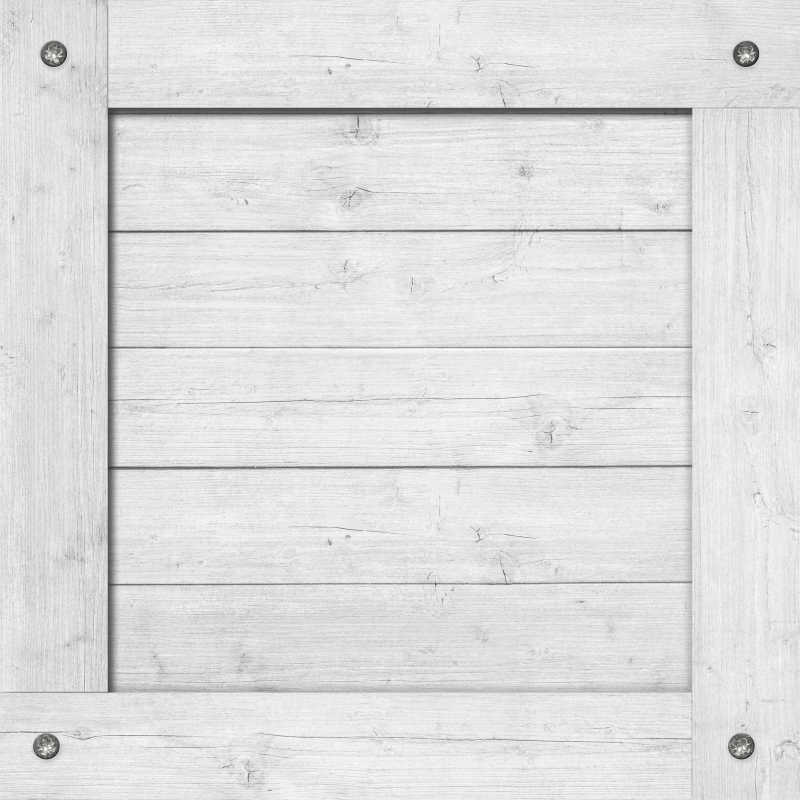

<!DOCTYPE html>
<html>

<head>
    <meta charset="utf-8" />
    <meta http-equiv="X-UA-Compatible" content="IE=edge" />
    <title>GeoAR.js demo</title>
    <script src="https://aframe.io/releases/1.2.0/aframe.min.js"></script>
    <script src="https://unpkg.com/aframe-look-at-component@0.8.0/dist/aframe-look-at-component.min.js"></script>
    <script src="https://raw.githack.com/AR-js-org/AR.js/master/aframe/build/aframe-ar-nft.js"></script>
</head>

<body style="margin: 0; overflow: hidden;">
        <a-scene vr-mode-ui="enabled: false" embedded
            arjs='sourceType: webcam; sourceWidth:1280; sourceHeight:960; displayWidth: 1280; displayHeight: 960; debugUIEnabled: false;'>
        <!-- <a-text value="This content will always face you." look-at="[gps-camera]" scale="120 120 120"
            gps-entity-place="latitude: <add-your-latitude>; longitude: <add-your-longitude>;"></a-text>
        <a-camera gps-camera rotation-reader> </a-camera> -->


        <!-- <a-assets>
            
            
            
            
            
        </a-assets> -->
<!-- 
            <a-entity gps-entity-place="longitude:  121.42180662707015; latitude: 25.038405440942405"
                gltf-model="./assets/articuno/scene.gltf" rotation="0 180 0" scale="0.15 0.15 0.15"
                animation="property: rotation;from: 0 0 0; to: 0 360 0; dir: normal; dur: 15000; loop: true;easing:linear"
                animation__2="property: object3D.position.y; to: 2.5; dir: alternate; dur: 2000; loop: true"
                animation__3="property: rotation;startEvents: click; to: 0 00 0; dir: alternate; dur: 1500; easing:easeOutCubic;"
                animation__4="property: rotation;startEvents: mouseleave; to: 0 360 0; dir: normal; dur: 20000; loop: true;easing:linear"
                animation-mixer>
            </a-entity> -->


        <a-entity gps-entity-place="longitude:  121.42180662707015; latitude: 25.038405440942405"
            gltf-model="./assets/role/scene.gltf" position="0 8 0" scale="0.16 0.16 0.16"
            animation="property: rotation;from: 0 0 0; to: 0 360 0; dir: normal; dur: 15000; loop: true;easing:linear"
            animation__2="property: object3D.position.y; to: 2.5; dir: alternate; dur: 2000; loop: true"
            animation__3="property: rotation;startEvents: click; to: 0 00 0; dir: alternate; dur: 1500; easing:easeOutCubic;"
            animation__4="property: rotation;startEvents: mouseleave; to: 0 360 0; dir: normal; dur: 20000; loop: true;easing:linear"
            animation-mixer>
        </a-entity>


        <a-entity gps-entity-place="longitude:  121.4219818035106; latitude: 25.038317219651887"
            gltf-model="./assets/role2/scene.gltf" position="0 8 0" scale="0.0016 0.0016 0.0016"
            animation="property: rotation;from: 0 0 0; to: 0 360 0; dir: normal; dur: 15000; loop: true;easing:linear"
            animation__2="property: object3D.position.y; to: 2.5; dir: alternate; dur: 2000; loop: true"
            animation__3="property: rotation;startEvents: click; to: 0 00 0; dir: alternate; dur: 1500; easing:easeOutCubic;"
            animation__4="property: rotation;startEvents: mouseleave; to: 0 360 0; dir: normal; dur: 20000; loop: true;easing:linear"
            animation-mixer>
        </a-entity>

        <a-box gps-entity-place="longitude:  121.4219409418102; latitude: 25.038325055871468"
            src="./assets/img/wooden2.png" position="0 8 0" rotation="0 45 45" scale="2 2 2"
            animation="property: rotation;from: 0 0 0; to: 0 360 0; dir: normal; dur: 15000; loop: true;easing:linear;delay: 5000"
            animation__2="property: object3D.position.y; to: 8.5; dir: alternate; dur: 2000; loop: true;delay: 5000"
            animation__3="property: rotation;startEvents: click;; to: 0 720 0; dir: alternate; dur: 2500; easing:easeOutCubic;"
            animation__4="property: scale;startEvents: click; to: 0 0 0; dir: alternate;  dur: 500; easing:linear;delay: 1000"
            animation__5="property: rotation;startEvents: mouseleave; to: 0 360 0; dir: normal; dur: 20000; loop: true;easing:linear">
        </a-box>


        <a-box gps-entity-place="longitude:  121.42179476142465; latitude: 25.03843623509647"
            src="./assets/img/question.jpg" position="0 8 0" rotation="0 45 45" scale="2 2 2"
            animation="property: rotation;from: 0 0 0; to: 0 360 0; dir: normal; dur: 15000; loop: true;easing:linear;delay: 1500"
            animation__2="property: object3D.position.y; to: 8.5; dir: alternate; dur: 2000; loop: true;delay: 1500"
            animation__3="property: rotation;startEvents: click;; to: 0 720 0; dir: alternate; dur: 2500; easing:easeOutCubic;"
            animation__4="property: scale;startEvents: click; to: 0 0 0; dir: alternate;  dur: 500; easing:linear;delay: 1000"
            animation__5="property: rotation;startEvents: mouseleave; to: 0 360 0; dir: normal; dur: 20000; loop: true;easing:linear">
        </a-box>


        <a-box gps-entity-place="longitude:  121.42341939509463; latitude: 25.03842430009167"
            src="./assets/img/wooden2.png" position="0 8 0" rotation="0 45 45" scale="2 2 2"
            animation="property: rotation;from: 0 0 0; to: 0 360 0; dir: normal; dur: 15000; loop: true;easing:linear;delay: 2000"
            animation__2="property: object3D.position.y; to: 8.5; dir: alternate; dur: 2000; loop: true;delay: 2000"
            animation__3="property: rotation;startEvents: click;; to: 0 720 0; dir: alternate; dur: 2500; easing:easeOutCubic;"
            animation__4="property: scale;startEvents: click; to: 0 0 0; dir: alternate;  dur: 500; easing:linear;delay: 1000"
            animation__5="property: rotation;startEvents: mouseleave; to: 0 360 0; dir: normal; dur: 20000; loop: true;easing:linear">
        </a-box>


        <a-box gps-entity-place="longitude:  121.42625086293434; latitude: 25.041665231379895"
            src="./assets/img/wooden2.png" position="0 8 0" rotation="0 45 45" scale="2 2 2"
            animation="property: rotation;from: 0 0 0; to: 0 360 0; dir: normal; dur: 15000; loop: true;easing:linear;delay: 3000"
            animation__2="property: object3D.position.y; to: 8.5; dir: alternate; dur: 2000; loop: true;delay: 3000"
            animation__3="property: rotation;startEvents: click;; to: 0 720 0; dir: alternate; dur: 2500; easing:easeOutCubic;"
            animation__4="property: scale;startEvents: click; to: 0 0 0; dir: alternate;  dur: 500; easing:linear;delay: 1000"
            animation__5="property: rotation;startEvents: mouseleave; to: 0 360 0; dir: normal; dur: 20000; loop: true;easing:linear">
        </a-box>


        <a-box gps-entity-place="longitude:  121.43057285997057; latitude: 25.035921672714156"
            src="./assets/img/question.jpg" position="0 8 0" rotation="0 45 45" scale="2 2 2"
            animation="property: rotation;from: 0 0 0; to: 0 360 0; dir: normal; dur: 20000; loop: true;easing:linear"
            animation__2="property: object3D.position.y; to: 8.5; dir: alternate; dur: 2000; loop: true"
            animation__3="property: rotation;startEvents: click;; to: 0 720 0; dir: alternate; dur: 2500; easing:easeOutCubic;"
            animation__4="property: scale;startEvents: click; to: 0 0 0; dir: alternate;  dur: 500; easing:linear;delay: 1000"
            animation__5="property: rotation;startEvents: mouseleave; to: 0 360 0; dir: normal; dur: 20000; loop: true;easing:linear">
        </a-box>


        <a-box gps-entity-place="longitude:  121.43149032939922; latitude: 25.035342785049135"
            src="./assets/img/wooden2.png" position="0 8 0" rotation="0 45 45" scale="2 2 2"
            animation="property: rotation;from: 0 0 0; to: 0 360 0; dir: normal; dur: 20000; loop: true;easing:linear"
            animation__2="property: object3D.position.y; to: 8.5; dir: alternate; dur: 2000; loop: true"
            animation__3="property: rotation;startEvents: click;; to: 0 720 0; dir: alternate; dur: 2500; easing:easeOutCubic;"
            animation__4="property: scale;startEvents: click; to: 0 0 0; dir: alternate;  dur: 500; easing:linear;delay: 1000"
            animation__5="property: rotation;startEvents: mouseleave; to: 0 360 0; dir: normal; dur: 20000; loop: true;easing:linear">
        </a-box>


        <!-- maxDistance: 30; -->
        <!-- <a-camera gps-camera rotation-reader> </a-camera> -->
        <a-camera gps-camera="maxDistance: 30;" rotation-reader>
            <a-entity
                animation__click="property: scale; startEvents: click; easing: easeInCubic; dur: 150; from: 0.1 0.1 0.1; to: 1 1 1"
                animation__fusing="property: scale; startEvents: fusing; easing: easeInCubic; dur: 1500; from: 1 1 1; to: 0.1 0.1 0.1"
                animation__mouseleave="property: scale; startEvents: mouseleave; easing: easeInCubic; dur: 500; to: 1 1 1"
                cursor="fuse: true;" material="color: cyan; shader: flat" position="0 0 -3"
                geometry="primitive: ring; radiusInner: 0.05; radiusOuter: 0.08;">
            </a-entity>
        </a-camera>
    </a-scene>
</body>

</html>